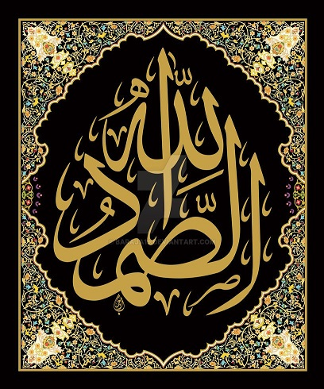

Allah’ın Tek olduğunu ilan eden İhlas Suresi Ehad ismiyle başlıyor:
İkinci âyette es-Samed ismini okuyoruz. Açıklaması zor olan bu kavram için şu anlamlar verilmiş: Herşey O'na muhtaç olduğu hâlde, hiçbir şeye muhtaç olmayan; Öncesiz ve Sonrasız; Bütün evrenin asıl sebebi. 
Üçüncü âyet, "Allah'a atfedilen çocuk" kavramını reddediyor:

Bu surenin her âyetinde "tekil" kelimeler var: ehad sadece burada Allah için kullanılmış samed bütün Kitap'ta bir kere geçiyor yelid-yûled sadece burada Allah için kullanılmış kufuv bütün Kitap'ta bir kere geçiyor Baştaki âyet BİR derken, sonra gelen üç olumsuz lem ve en sondaki "hiç kimse" anlamında ehad, Allah'ın Eşsizliğini ve Tekilliğini vurguluyor.